| 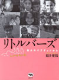 | 『リトルバーズ 第48回 JCJ（日本ジャーナリスト会議）大賞 |
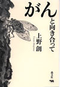 | 『がんと向き合って』 第51回日本エッセイスト・クラブ賞 |
| 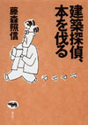 | 『建築探偵、本を伐る』 第1回毎日書評賞 |
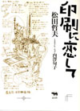 | 『印刷に恋して』 第３回ゲスナー賞「本の本」部門 銀賞 |
| 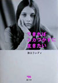 | 『できればムカつかずに生きたい』 第一回婦人公論文芸賞 |
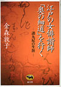 | 江戸の女俳諧師 日本エッセイスト・クラブ賞 |
| 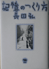 | 記憶のつくり方 桑原武夫学芸賞 |
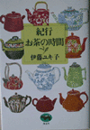 | 紀行・お茶の時間 ＪＴＢ紀行文学大賞 |
| 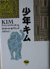 | 少年キム ノーベル文学賞 |
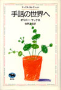 | 手話の世界へ 毎日出版文化賞 |
| 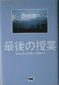 | 最後の授業 ＡＰＰＡ |